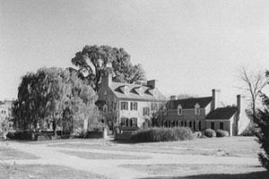
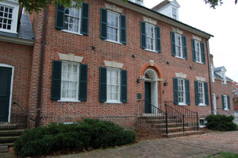

Rossborough InnBuilt in 1798, the Rossborough Inn is today the oldest building on the campus of the University of Maryland College Park, but did not actually become part of the campus until some years later. Over the years it has variously served as a hostel for travelers, a social center for the Washington and southern Maryland elite, an agricultural experiment station, and a faculty and alumni club. Like a number of buildings on campus, the inn is said to be haunted. During the Civil War the inn was used as a temporary camp by the Confederate army. According to noted historian and former Vice Chancellor of Academic Affairs George C. Callcott: |
Click "Play" button to view |
|
|  |  |
Are you visiting campus? Right-click to download the audio |
Rossborough Inn
| Rossborough Inn, 2007 | |
|
"In April of 1864, Union General Ambrose E. Burnside, moving from Annapolis to Washington, camped his 6,000 troops on the College grounds. The troops destroyed some fences, and the College sued the government in vain for damages. Three months later, Confederate General Bradley T. Johnson, a Marylander, swept through with at least 400 men, threatening Washington from the rear. On July 11, Johnson set up headquarters in the Rossborough Inn, and his men camped around it. Students and officials at the College welcomed them warmly. That evening, College officials provided food for the soldiers, and young women appeared from the surrounding neighborhood. Fifes and fiddles came out, and partying lasted into the night" (2005, p. 28). |
||